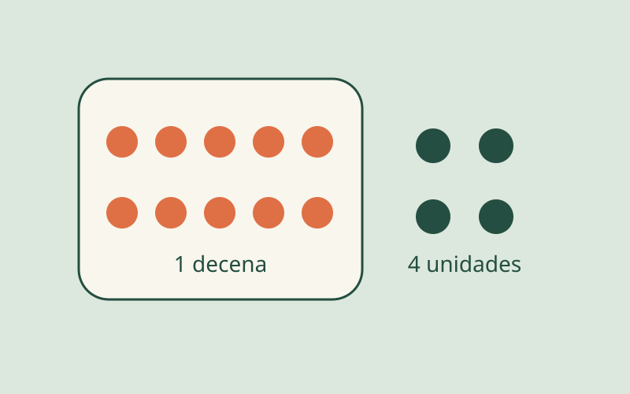
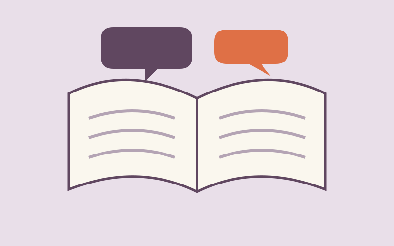
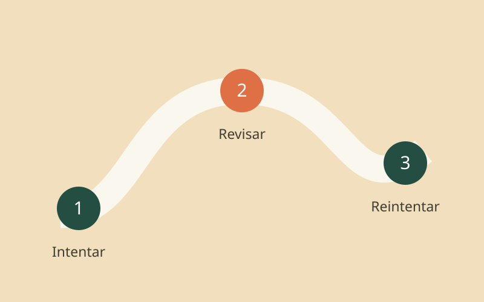

MATEMÁTICAS · 3 min de lectura
Matemáticas que se pueden tocar
De diez objetos a una decena: una idea pequeña que abre la puerta al valor posicional.
Leer entradaCUADERNO DE IDEAS / EDUCACIÓN PRIMARIA
Matemáticas que se construyen, historias que se conversan y preguntas que nos ayudan a aprender.
Explorar las entradas ↓Por Alexander Reyes · Docente de primaria

PARA LEER Y LLEVAR AL AULA
MATEMÁTICAS · 3 min de lectura
De diez objetos a una decena: una idea pequeña que abre la puerta al valor posicional.
Leer entrada
LECTURA · 3 min de lectura
Tres preguntas para acompañar un cuento y dar espacio a la voz de cada lector.
Leer entrada
VIDA EN EL AULA · 3 min de lectura
Una respuesta equivocada también permite preguntar, comparar y volver a intentar.
Leer entradaLA PREGUNTA QUE NOS ACOMPAÑA